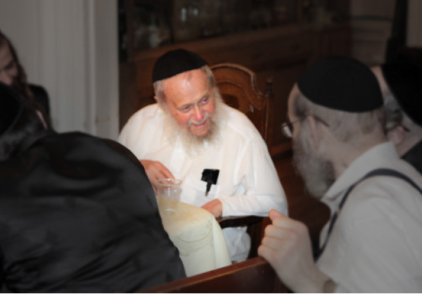

Ask Your Elders and They Shall Tell You
R ’ Mendel Morosov, a senior Lubavitcher Chassid and unique source of reliable stories about Chabad Chassidim of previous generations, shares childhood memories. * About a trip to the Rebbe, t ’ kios with the Tzemach Tzedek, and the beginning of the Rebbe Maharash ’ s nesius .

This article was written minutes after a spontaneous farbrengen back in Elul, in the modest home of R’ Menachem Mendel Morosov. He lives on the corner of Eastern Parkway and Albany, a short walk from 770.
R’ Mendel welcomed us with a warm smile. On the table were some pieces of honey cake, drinks, some glasses and a small bottle of mashke that was a third full. The latter is always on the table, ready for a farbrengen.
It was a good opportunity to drink (no more than four shots of) vodka mixed with whisky. He said, “Zogt l’chaim,” and it didn’t take long for the sharp drink to take effect. R’ Mendel didn’t stop saying, “L’chaim Chassidim, l’chaim!” He tells us to taste some farbaisen of honey cake. Pointing at the mashke, he chuckles as he says, “For me that is also farbaisen.” Due to his age, the takana regarding mashke was never relevant.
For those who don’t know, R’ Mendel Morosov is nearly 100 years old, may he live many more healthy years. He is a baal shmua (reliable transmitter) of stories about Chabad Chassidim of previous generations. He himself was born in Lubavitch, and apparently is the only Chassid of our generation who spent his early childhood years in the towns of Lubavitch and Rostov.
R’ Mendel is the son of the well-known Chassid R’ Chonye, may Hashem avenge his blood, who served as the personal assistant of the Rebbe Rashab and Rebbe Rayatz. This explains how young Mendel merited special signs of closeness from the Rebbe Rayatz.
R’ Mendel’s mind is sharp and he has numerous memories of the days he spent with the great Chassidim, taking in their words and learning from their ways. He smiled throughout the farbrengen and was in high spirits. His Chassidic joking and laughter cloak a message that becomes progressively clearer as the time passes.
The first story we heard from him did not have much to do with the ways of Chassidim, but was about “what not to be.” This is what R’ Mendel said:
During the First World War, the Rogatchover moved from Dvinsk to Leningrad (and moved back to Dvinsk a few years later). So in my youth, I davened in the Chassidic shul where he davened. There was also a minyan of Misnagdim in the city, but one day, it seems their shul was closed, and a Misnagdic young man came to the Chassidic shul to daven Shacharis. Misnagdim begin their davening in shul with the Morning Blessings, and this man began to recite them out loud, forcing everyone to stop and answer amen.
The Rogatchover’s place was on the eastern wall. He stood behind the chazzan’s lectern which was high, like in 770, and concealed the Rogatchover who was a short man. When he heard the Misnaged, he leaned over from his place and looked over the chazzan’s lectern. His eyes met mine and he smiled broadly and said, “Yingele, yingele, look at a Misnaged …” and he laughed.
TRAVELING TO THE REBBE
As is the way of Chassidim of earlier times, R Mendel “lives” the stories he tells at farbrengs. They fill him with energy and he goes into detail about them and the spirit of the times in which they transpired. He told of an unusual sort of trip to the Rebbe as follows:
During World War I, when the Germans approached Smolensk which was near Lubavitch, we left Lubavitch and a few years later we moved to Rostov. My father was the gabbai for the Rebbe Rayatz. After a short while, when I was eight, the Rebbe moved to Leningrad (which is Petersburg today). Since my father was the gabbai, we also moved.
In earlier years, a religious Jew was not allowed to live in Leningrad. It was a beautiful city, but spiritually polluted. When we arrived there, there were already a few Jews. Many war refugees made their way there. But there still was no yeshiva. We were little boys who needed to go to yeshiva, and my father couldn’t learn with us because he was busy from morning till night in the Rebbe’s house. Having no choice, my parents decided to send me and my younger brother Herschel to learn in the Chassidic town of Nevel.
They arranged with a young man, Eliyahu Volovskin, who was a melamed in Nevel, to look after us during our stay there. We learned by him, ate by him, and slept by him. He was young; I think he was newly married since he did not have children then.
I remember the big room that we learned in. There was a large table in the center and that is where we learned. Our class had many children. We learned Chumash; I don’t remember whether we learned it with Rashi or not, but what I remember is that he was a Chassidic melamed. On Fridays and Shabbos he did not teach; he just told Chassidic stories. Every night we folded the table, put chairs together, put some shmatte over them and went to sleep.
In Elul, all the talmidim of the yeshiva and the Chassidim of the town went to the Rebbe, to Leningrad. My little brother and I also went. I was very happy to return home, but my joy was marred because Herschel was very sick.
Since we were still little children – I was nine and he was seven – we could not travel alone on the train. They sent us with a bachur from Tomchei T’mimim, Leibel Lipsker, who was 18. He accompanied us on the train.
The trip from Nevel to Leningrad took twelve hours. Since my brother did not feel well, they arranged a special place for him to rest. I, on the other hand, was unable to sit for so long, and I walked around throughout the journey.
After several hours of traveling at night, when the first rays of dawn could be seen, Leibel called me and said, “Mendele, you need to daven.” He brought me a Siddur and showed me what to daven. I suppose I finished davening too quickly for his liking, and he told me that I had skipped pages. I believed him. It was possible. I said: Okay, so I have to daven again. Then he said, “I will show you where.” He pointed at certain sections and said, “You skipped here and here, say this over.”
I was amazed and I asked him how he knew what I skipped. He told me that he saw that some pages in the Siddur were illuminated and others were dark and the dark parts were where I had skipped. I told him, “But I don’t see that,” and he said, “You don’t see it but I do.” I couldn’t argue with him and I davened again (R’ Mendel laughed heartily). As a child, I believed him.
After davening, I continued wandering around from one compartment to another. I found a compartment that was completely empty except for one old Jew who was sitting alone. He was a distinguished looking Chassid with a long white beard. I did not know him, but he seemed to know me; he called me over and asked me to tell him a Chassidic story that I heard from my melamed. I told him a story I had recently heard and from the expression on his face I could see he enjoyed it very much.
THE STORY REBBETZIN SHTERNA SARA TOLD
As soon as we arrived home, my brother was taken to the hospital where he died. After this tragedy, my parents decided not to send me back to Nevel and I remained in Leningrad. I was very happy to stay home.
Some months passed and one day I took my little brother Sholom, who was in a baby carriage, and wheeled him from one room to another. The house was very small and when we walked through the living room, I saw my father sitting with a guest I did not know. The man had a long black beard and a smiling face. My father suddenly called me and said: Leave Sholom in the carriage and come here.
I went over to them and my father asked me: Repeat the story that you told R’ Meir Simcha Chein on the train from Nevel to Leningrad.
I didn’t know who Meir Simcha was. I did not know a Chassid by that name and I certainly did not remember that I had told him a story. It was only when my father reminded me of the old Jew I had met in the empty train compartment, who had asked me to tell him a story, that I remembered. I happily repeated the story:
In the time of the Alter Rebbe, Chassidim tried to be mekarev young Torah scholars who would be able to absorb the depth of Chassidus. Those young men, who appreciated Chassidus, often needed mesirus nefesh to become Chassidim, for many of them were supported by their fathers-in-law who were Misnagdim. When the father-in-law found out that his son-in-law had become involved with Chassidus, he would stop supporting him.
It happened that a young man discovered Chassidus. When his wealthy father-in-law discovered that his son-in-law had become a Chassid, he told him that although he would not cut off support, he wanted to speak to the Alter Rebbe personally.
The father-in-law went to the Alter Rebbe and complained: Chassidus ruined my son-in-law! Before he became acquainted with Chassidic teachings, he would sit and learn diligently for eighteen hours a day. Once he started learning Chassidus, he began skipping hours of learning and now he sits idly!
The Alter Rebbe said: You are mistaken. Until now, your son-in-law learned three hours for you, so that you would see that he is learning. He learned another three hours for his mother-in-law, so she would see that he is learning. He learned another three hours for his wife, so she would see that he is learning, and another three hours for the neighbor, so he should also see him learning. He even learned a few hours for the cat – i.e. every time the cat walked past the door and your son-in-law thought that someone was watching him, he would run and open a book so everyone would think he learns. He learned only a few hours for real, because Hashem said so. Now that he has studied Chassidus, he realizes that nothing exists except for G-d. You, your wife, his wife, the neighbor, and the cat don’t matter and so he doesn’t run to open a book each time you pass by. Nu, what’s surprising about him learning less?
I said all this to the young guest. He stood the entire time with arms folded and a big smile on his face. After he left the house, I asked my father what his name was and why I had been asked to tell the story that I had told to “Meir Simcha” a few months ago on the train from Nevel to Leningrad.
My father said: The guest who just left the house was R’ Shaul Ber Zislin (years later, he served as rav of the Chabad community in Tel Aviv) who heard the story from Rebbetzin Shterna Sara, the Rebbe Rashab’s wife. She said she heard it from R’ Meir Simcha Chein who told everyone he had heard it from R’ Chonye’s ten year old Mendele.
MEMORIES OF T’KIOS WITH THE TZEMACH TZEDEK
During the farbrengen, R’ Mendel recounted for us a moving testimony that he heard as a young boy from an old Chassid who had attended the t’kios on Rosh HaShana in the Tzemach Tzedek’s shul in Lubavitch for many years. This is what he said:
When I was a boy, I met a Chassid by the name of R’ Peretz who was 93 at the time. He described to me in detail what Rosh HaShana in Lubavitch was like during the nesius of the Tzemach Tzedek: There was a platform in the center of the beis midrash on which the Tzemach Tzedek stood, and during the blowing of the shofar his holy sons stood there around the platform in a circle. Each one had a set place.
Today, I don’t remember what the precise order R’ Peretz described was, but what I do remember is that the place of the Rebbe Maharash, the youngest son, was opposite his father.
WHY R’ SHMUEL BER BORISOVER WENT TO THE REBBE MAHARASH
After the passing of the Tzemach Tzedek, many of the great Chassidim went to his sons to hear Chassidus. The Rebbe Maharash, who was the youngest son, refused to say maamarei Chassidus. Furthermore, because of his manner of dress and other externalities, some thought of him as modern.
Some time after the passing of the Tzemach Tzedek, a will was discovered in which it said that the Rebbe’s youngest son should perpetuate the Chabad leadership. The other brothers, each one an Admur of his own Chassidim, decided to leave Lubavitch and each of them went somewhere else.
Most of the maskilim and great Chassidim were drawn to Kopust, Liadi, and Niezhin. A few simple people remained in Lubavitch. R’ Shmuel Grunem (later, the first mashpia in Tomchei T’mimim) was among the many who were undecided. He did not know whom to follow.
He finally decided to go to the Chassidic town of Bobruisk in order to consult with one of the great Chassidim of the Tzemach Tzedek, the mashpia R’ Shmuel Ber Borisover. Upon arriving there, R’ Shmuel Ber told him that he had decided to go to Lubavitch to the Rebbe Maharash because of three reasons, two of which I (R’ Mendel Morosov) still remember.
R’ Shmuel Ber told R’ Shmuel Grunem that one time, when he was in Lubavitch, the Tzemach Tzedek said a maamer and he quoted something from Eitz Chaim. At the end of the Shabbos farbrengen, when the chozrim reviewed the maamer, they asked, “How does it fit with what it says in Eitz Chaim?” Nobody knew the answer. Even the great sons of the Tzemach Tzedek tried to find an answer but were unable to do so.
At two in the morning on Motzaei Shabbos, R’ Shmuel Ber walked restlessly in the narrow streets of Lubavitch, preoccupied with the maamer that the Tzemach Tzedek had said. As he walked, he noticed a light from the window of the Rebbe Maharash’s home.
He was curious about what the Rebbe Maharash was doing so late at night. However, since the Rebbe Maharash’s house was considered up-to-date for those days, since it was a taller building and the windows were placed higher than the norm, R’ Shmuel Ber had to climb the outer wall. He had to be careful not to get caught. He peeked in through the window and saw the Rebbe sitting and learning Eitz Chaim at the very difficult place that the Tzemach Tzedek had spoken about on Shabbos.
R’ Shmuel Ber realized that the Rebbe Maharash was familiar with the topic and he wanted to ask him for an answer to the question on the maamer. He went to the front of the house and began knocking at the door. He heard the Rebbe Maharash say, “Who is it?” “Shmuel Ber,” he replied.
“One minute,” said the voice and to R’ Shmuel Ber’s astonishment, when the Rebbe Maharash opened the door, the Eitz Chaim had disappeared and the table was covered with newspapers in various languages.
“What do you want?” asked the Rebbe Maharash. R’ Shmuel Ber told him the question and the Rebbe Maharash said, “Why did you come to me? How should I know the answer to this difficult question?”
When R’ Shmuel Ber saw that the Rebbe Maharash was trying to dodge the issue, he decided to tell him what he had seen minutes earlier, through the window. “If you don’t tell me the answer, tomorrow I will tell the entire town what happened here at two in the morning.” So the Rebbe Maharash agreed to explain the Eitz Chaim to him.
That was one reason he was going to the Rebbe Maharash. As to the second reason, R’ Shmuel Ber said that one time, when he was in Lubavitch for Rosh HaShana, he watched the Tzemach Tzedek during the reading of the Haftora on the first day, about Chana giving birth and naming her son Shmuel. When he reached the words “This is the child I prayed for,” the Tzemach Tzedek inclined his head toward his son Shmuel, later to be the Rebbe Maharash.
Y. Lapidot. "Ask Your Elders and They Shall Tell You." Beis Moshiach, no. 896 (October 4, 2013).